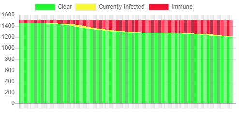
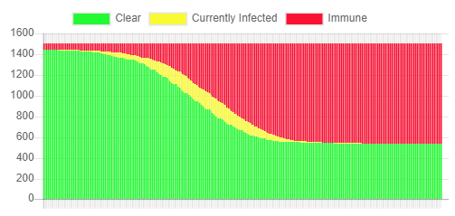

Using mathematical models, simulations of the upcoming school year were run under varying conditions. You can access the simulation here and run some for yourself.
The mathematical models are PROBABLY WRONG, but they are USEFUL to compare different scenarios.
<hr>
|
 |  |
95% masks |
50% masks |
0% masks |
#3 The rate of transmission makes a difference (and isn't really known.)